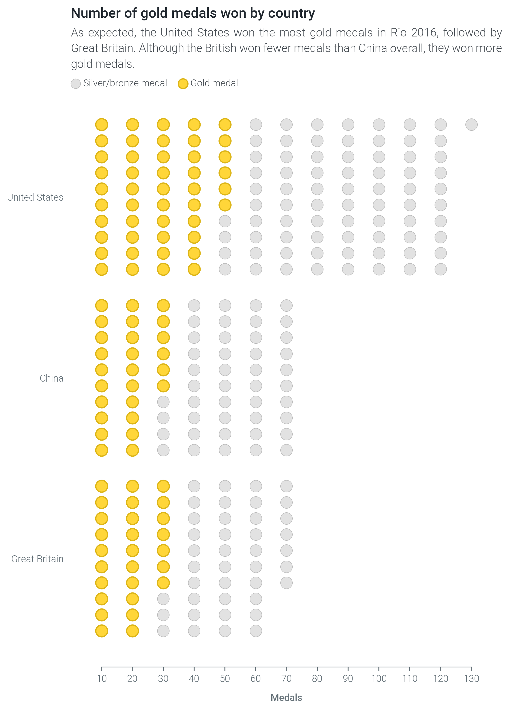

7. Population Chart¶
Understanding data means understanding what it’s made up of. The population visualization lets you do just that.
Note
Can’t wait to start creating slope graphs? Multiplex’s Jupyter Notebook examples are a quick guide to get you up and running. Check out the population charts Jupyter Notebook tutorial to learn how to create the time series shown above, or to start creating your own slope graph visualizations.
Multiplex’s population chart is a brand new type of visualization that builds on matplotlib. This visualization makes it easy to show how different populations or sets vary from each other.
Population charts are not commonly used, partially because they can be replaced with bar charts or stacked bar charts. However, they can help you emphasize more how populations are different from each other.
To draw a population chart, create a Drawable class and call the draw_population() function.
You will need to provide, at least, the number of items in the population, the number of rows, as well as the name.
Any other keyword arguments are interpreted as style options.
import matplotlib.pyplot as plt
from multiplex import drawable
viz = drawable.Drawable(plt.figure(figsize=(10, 10)))
viz.draw_population(10, 5, 'United States', color='#AAAAAA')
viz.show()
If you would rather style population items individually, you can provide a list of population items. The population items can be any value, but dictionaries are special: Multiplex interprets dictionaries as styling options that override the general styling options.
import matplotlib.pyplot as plt
from multiplex import drawable
viz = drawable.Drawable(plt.figure(figsize=(10, 10)))
viz.draw_population([ { 'color': 'C1' } ] + [ True ] * 9, 5, 'United States', color='#AAAAAA')
viz.show()
You can use the special parameter label to add legend items.
The label can be provided to the draw_population() function to add a general legend, or as part of the item dictionaries.
The label_style parameter changes what the legend label looks like:
import matplotlib.pyplot as plt
from multiplex import drawable
viz = drawable.Drawable(plt.figure(figsize=(10, 10)))
viz.draw_population([ { 'color': 'C1', 'label': 'Highlighted item' } ] + [ True ] * 9, 5, 'United States', label_style={ 'fontweight': 'bold' })
viz.show()
-
class
population.population.Population(*args, **kwargs)¶ The
Populationclass plots scatter points that represent populations. Like all visualizations, it stores aDrawableinstance and revolves around thedraw()function. To draw a population chart, create aDrawableclass and call thedraw_population()function.Variables: - start_labels (list of
Annotation) – The drawn start labels. - populations (list of list of list of
matplotlib.collections.PathCollection) – A list of populations, represented as scatter points. Each population contains these points, separated by column. - rows (int) – The number of rows in the populations.
-
__init__(*args, **kwargs)¶ Initialize the slope graph with a drawable. This function also creates a container for the drawn labels and populations.
-
draw(population, rows, name, style_plot=True, height=0.6, show_start=False, label=None, label_style=None, *args, **kwargs)¶ Draw a new population on this plot.
You can pass additional styling options as
argsorkwargs. The accepted styling options are those supported by the matplotlib.pyplot.barh method.Parameters: - population (int or list) – The population to draw. This can be simply the size of the population or a list of values.
- rows (int) – The number of rows in which to split the population.
- name (str) – The name of the population. The function automatically adds this name to the y-axis tick labels next to the drawn population.
- style_plot (bool) –
A boolean indicating whether the plot should be re-styled. If it is set to
True, the visualization:- Removing the y-axis,
- Inverting the y-axis, and
- Removing the grid.
- height (float) – The height of the population, between 0 (exclusive) and 1.
- show_start (bool) – Draw a label next to the first item in the population. This label looks exactly like the ticks and is a simple ‘1’.
- label (str or None) – The label to draw.
If
Noneis given, the function adds no label. - label_style (dict or None) – The style of the label.
By default, the label inherits the style from the
kwargsso that the label is visually similar to the bar. Thelabel_styleaccepts any styling option supported by theAnnotation’sdraw()function.
Returns: A list of drawn scatter points, separated by column.
Return type: list of list of
matplotlib.collections.PathCollectionRaises: - TypeError – If the population is not an integer.
- TypeError – If the population is not a positive integer.
- TypeError – If the number of rows is not an integer.
- TypeError – If the number of rows is not a positive integer.
- ValueError – If the height is not between 0 and 1.
- start_labels (list of